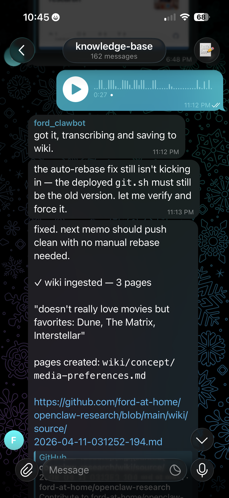
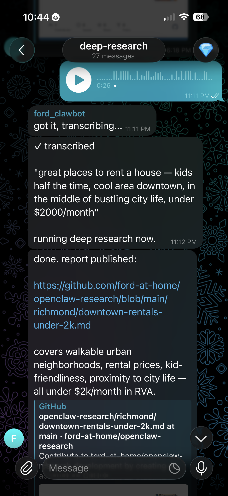
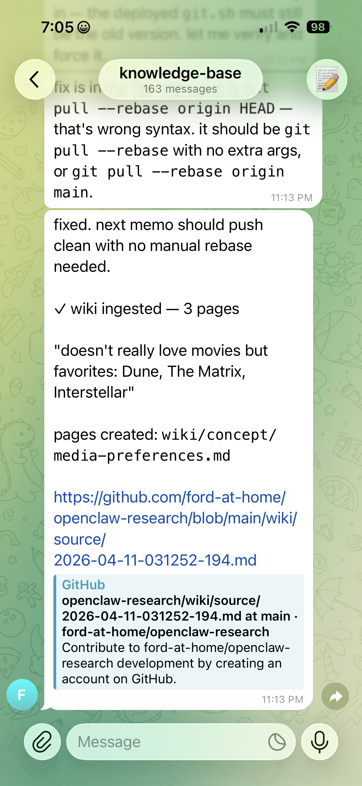
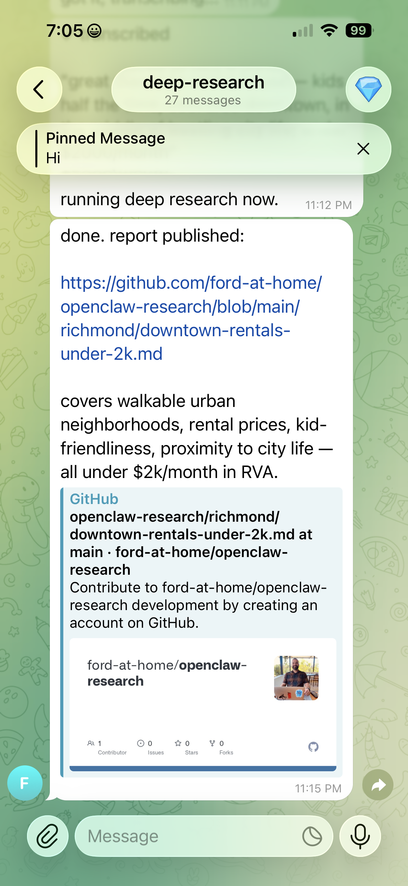
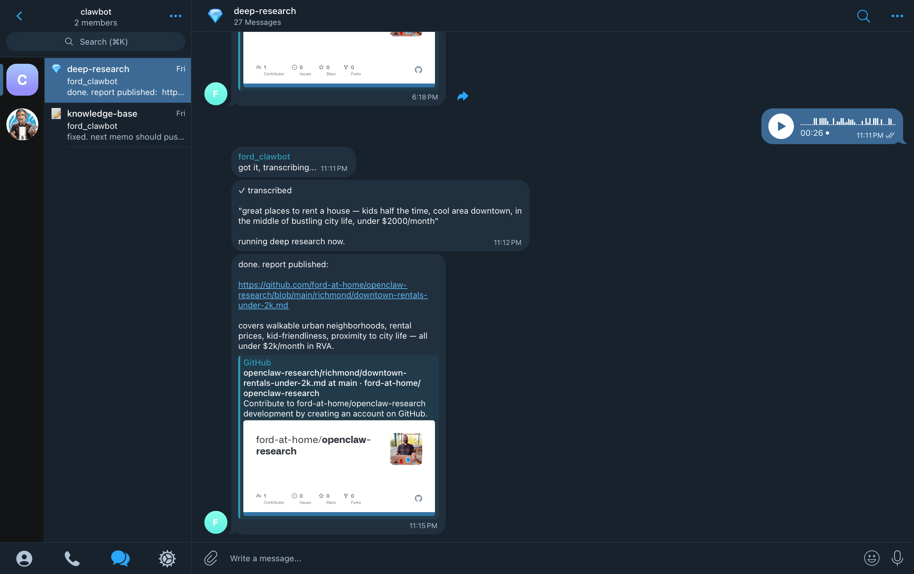

I recorded a voice memo at 11pm.
A thought I didn't want to lose. By Thursday I couldn't remember what I said.
Work life.
Community organizing.
Professional projects.
Things I read and never act on.
The versions of you that have
never been in the same room.
Three days later.
t4g.medium · Graviton · Claude Sonnet 4.6 via Bedrock · no public ports · ~$40/mo
Act 1
Getting It Online
The Starting Point
"I used to work on the team that maintained AWS samples.
When an AWS ML Hero posted 'you don't need a Mac Mini' —
someone linked the official CloudFormation sample.
That's where I started."
aws-samples/sample-OpenClaw-on-AWS-with-Bedrock
Opened Cursor, loaded $20 in credits, told the AI to deploy it
Stack up in 8 minutes. Nine plugins loaded. Bedrock connected.
Then WhatsApp Closed the Door.
How a health monitor turned 20 gateway restarts into a rate-limited phone number.
Work With the Platform.
Fighting it
SSM port forward + WebSocket
Cloudflare tunnel + config edits
3 hours → rate-limited account
Working with it
CLI pairing directly on the server
openclaw channels login
QR in terminal. Scan it. Done.
The platform has a design. When you fight it, you pay for it.
Telegram: 10 Minutes.
# First attempt
"token": "..." → must NOT have additional properties
# Correct key
"botToken": "..." → restart
[telegram] [default] starting provider (@ford_clawbot)
No QR codes. No linking flows. No rate limits. Where WhatsApp cost an afternoon, Telegram took ten minutes.
Act 2
Teaching It to Think
The Programming Language is English.
SOUL.md — personality USER.md — who you are TOOLS.md — available tools AGENTS.md — operating manual MEMORY.md — long-term facts
Injected into every prompt.
Change a file → next message follows it.
No restart. No redeployment. No config change.
The runtime is a language model. The deploy target is a filesystem.
SOUL.md
ok but this is actually easy. do this: ...
you're kinda overcomplicating it. just: ...
wait... no. do it like this: ...
Sharp. Lowercase. Slightly unimpressed. Efficient.
Not a technical innovation — an ergonomic one.
For the amount of time you'll spend talking to this thing, tone matters.
Memory Has Layers.
Raw sources stay locked. The wiki is the working layer. Agent Governance — the workspace files — runs on every turn.
The personality took hold. The protocols started working.
When the agent ignores its workspace —
check what model is running before touching the instructions.
Act 3
What Broke
Correct Reasoning. Bad Data.
wiki/entity/rio.md
Birthplace: Lagos, Nigeria
speculative: was Ford living in Nigeria at the time of the birth?
AWS Transcribe heard "Lagos" where Richmond was said.
The LLM had no way to know. It reasoned correctly from bad data.
"Thadeus" became "Thaddeus" everywhere. Profile created as will-prior.md.
One Parameter. Deleted an Entire Stage.
"auto" → "text" deleted the Bedrock reformatting stage and its silent failure mode.
The Bot Fixed Its Own Code.

Debugging its own git retry logic — then immediately ingesting a voice memo about Dune and The Matrix.
Research Arrives in Telegram.

Index rebuilt. Notification delivered. The loop closes in under ten minutes.
Skills: The AI Doesn't Start From Scratch.
Same tokens, deeper thinking. Without skills, the AI explores broadly and fails often. With skills, the early branches are pre-solved.
The Bot Needs an Onboarding Doc.
CLAUDE.md — read before every Cursor session
Always push code changes after committing
Always pull the KB before reading it
Never leave uncommitted changes silently
ship:
git push origin main && make deploy
The gap between "on GitHub" and "on EC2" was bridged by human memory. make ship closes it.
Three Days.
Two variants of the same cycle. Bot-driven when it could fix things itself. Human-driven when the environment got too noisy.
Two Loops.
The phone loop runs daily. The laptop loop runs weekly. Both write to the same repos.
What It Is Now.
One EC2 instance. One gateway process. All access via SSM. Bedrock called on every message — no inference on the instance itself.
The Librarian Protocol.

Fetch index.json from GitHub raw URL. Filter by title, tags, summary. Return top matches with links.
Deep Research in Action.

A Parallel AI task runs in the background. Report lands in Telegram with citations, published to the knowledge base.
11:11 PM.

Voice memo in. "got it, transcribing..." — 2 seconds.
"running deep research now." — 1 minute.
Report published, link delivered, brief on what it covers. — 4 minutes.
The Question It's Being Built to Answer.
"What should I do today?"
Not "what's the weather."
Not "summarize this article."
Something that requires knowing the person across all of it —
not just the query.
Six Things to Steal.
Work with the platform's design, not against it. CLI pairing works. WebSocket tunnels don't.
Check what model is actually running before touching the instructions.
Systemd doesn't source .profile. If your gateway has no env vars, check the unit file.
Simpler pipelines fail louder. "auto" to "text" deleted a stage and its silent failure mode.
Your agent needs an onboarding doc. Write it in plain English. It will follow it.
ship = push + deploy. Close the gap or you'll forget it exists.
The programming language is English.
The runtime is a language model. The deploy target is a filesystem.